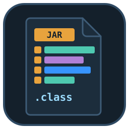
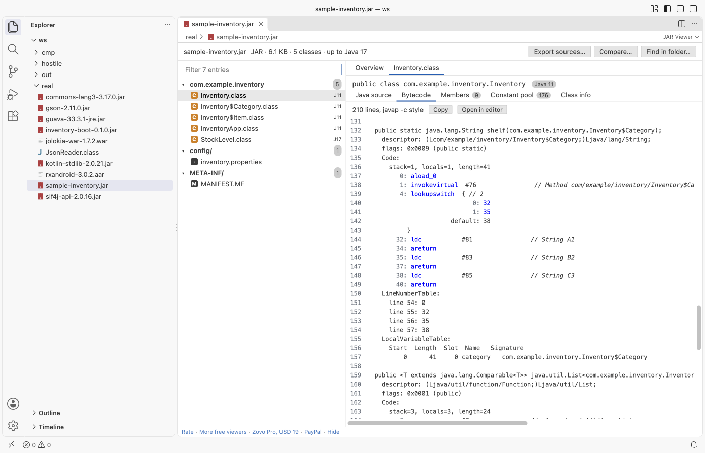

JAR Viewer & Java Decompiler (Class File Viewer, Bytecode, CFR)
JAR Viewer & Java Decompiler (Class File Viewer, Bytecode, CFR), a VS Code extension by Zovo
Open a .jar, .war, .ear, .aar or .class file in VS Code and see what is inside: packages, classes, resources and MANIFEST.MF, the Java version of every class, a javap-style bytecode listing and decompiled Java source. Decompiling uses the bundled CFR decompiler and the Java runtime already on your computer. Read-only, no network.
Free, MIT license. Needs VS Code 1.90.0 or newer. Extension ID zovo.zovo-jar-viewer, version 0.1.2.

Questions people ask
Is JAR Viewer & Java Decompiler (Class File Viewer, Bytecode, CFR) free?
Yes. JAR Viewer & Java Decompiler (Class File Viewer, Bytecode, CFR) is free and MIT licensed.
How do I install JAR Viewer & Java Decompiler (Class File Viewer, Bytecode, CFR)?
Click "Install in VS Code" above, or search for zovo.zovo-jar-viewer in the Extensions view.
What you see
- Packages and resources: the archive as a tree of packages, with a filter that finds a class or file among 50,000 entries as you type. Inner classes are dimmed under their outer class.
- Overview: format, size, entry count, classes, packages,
Main-Class,Start-Class,Created-By, module name, multi-release, and a chart of the Java versions the classes were compiled for (class file 52 is Java 8, 61 is Java 17, 65 is Java 21). - Java source: decompiled with CFR 0.152, with its inner classes. Copy it or open it in an editor tab.
- Bytecode: a
javap -c -pstyle listing written in JavaScript, with every opcode,tableswitchandlookupswitch,wide, resolved constants, exception tables, line numbers and local variables. It needs no Java. - Members: fields and methods as Java declarations (generic signatures included), with their descriptors, access flags and code size.
- Constant pool: every entry with its tag, references and value, with a filter.
- Class info: access flags, super class, interfaces, source file, inner classes, nest host, records, permitted subclasses, annotations and every attribute.
- Resources: text files (properties, XML, JSON, SQL, services files) open as text; binary files show a hex preview.
- Nested JARs: Spring Boot
BOOT-INF/lib, WARWEB-INF/liband AARclasses.jaropen one level deep, with a button back to the outer archive.

Open a file
- Click a
.jar,.war,.ear,.aaror.classfile in the Explorer. It opens in the viewer. - Command Palette: JAR Viewer: Open in JAR Viewer.
- A
.classfile opens on its own; its inner classes (Name$Inner.classin the same folder) are decompiled with it.
Decompiling needs Java
CFR is a Java program, so decompiled source needs a Java runtime, version 8 or newer. The viewer looks for one in this order:
- the setting
jarViewer.javaPath(ajavabinary or a JDK/JRE folder), JAVA_HOME,javaon yourPATH.
Without Java, every other view works and the Java source tab shows one line on how to turn decompiling on. Nothing pops up. The command JAR Viewer: Check the Java runtime used for decompiling shows which Java is used.
CFR runs in its own process with a 45-second limit and a 512 MB memory cap. CFR gets the classes of the open JAR as one temporary file in the extension's storage folder, so the other classes of the JAR resolve; the file is deleted when you close the editor. Only one CFR process runs per editor at a time.
Free and Pro
Everything above is free, with no limit and no sign-in. Three Zovo Pro tools save time on bigger jobs. Each has 3 free tries on your computer, and a try counts only when the tool gives you a result.
| Tool | Free | Zovo Pro |
|---|---|---|
| Packages, classes, resources, manifest, Java versions, bytecode, decompiled source, nested JARs | yes | yes |
Export the decompiled sources of a whole JAR into a folder of .java files, with progress and Cancel | 3 tries | yes |
| Compare two JARs: classes added, removed and changed, method and field signatures, Java version changes, as a Markdown report | 3 tries | yes |
| Find a class, method, field or string constant in every JAR of a folder, nested JARs included (plain text or /regex/) | 3 tries | yes |
Zovo Pro is USD 19 once and turns on the Pro tools in every Zovo extension. Nothing about Pro shows when you open a file; it only comes up when you click one of the three tools. To hide the buttons, set jarViewer.showProTools to false.

Safe with any file
- The archive is read in a separate worker thread with a time and memory limit. A broken or hostile file gives a message; it cannot freeze VS Code.
- Zip bombs are refused: an entry that claims more than 1,000 times its packed size, or unpacks to more than its header says, is stopped.
- Entry names with
.., absolute paths or control characters are listed and marked, and never written to disk. Exports write only names that stay inside the folder you picked. - Every count and length in a class file is checked against the bytes that are left: a constant pool of 65,535 junk entries or a cut class gives a message.
- Read-only: the extension never changes the archive.
- No network and no telemetry.
Commands
| Command | What it does |
|---|---|
| JAR Viewer: Open in JAR Viewer | Open a JAR, WAR, EAR, AAR or class file |
| JAR Viewer: Open a sample JAR | A small sample to try the viewer |
| JAR Viewer: Check the Java runtime used for decompiling | Shows the Java that CFR runs on |
| JAR Viewer: Export decompiled sources of a JAR (Pro) | A folder of .java files |
| JAR Viewer: Compare two JARs (Pro) | What changed between two versions |
| JAR Viewer: Find a class, method or string in every JAR of a folder (Pro) | Search many JARs at once |
Settings
| Setting | Default | |
|---|---|---|
jarViewer.javaPath | empty | Java runtime for CFR: a java binary or a JDK folder |
jarViewer.showProTools | true | Show the Export sources, Compare and Find in folder buttons |
jarViewer.showSupportLinks | true | Show the small links at the bottom of the viewer |
jarViewer.askForRating | true | Ask once, after a few days, whether you want to rate it |
Limits
- Decompiled source needs Java 8 or newer on your computer. CFR output can differ from the original source (names of local variables, some generics and lambdas).
- Entries are unpacked up to 64 MB each, class files up to 16 MB, nested archives up to 128 MB. Archives can have up to 200,000 entries.
- The overview reads the Java version of up to 50,000 classes.
- Nested archives open one level deep.
- Files on remote or virtual file systems are read up to 256 MB.
- APK and DEX files are not read here.
Works in VS Code 1.90 and later, Cursor, Windsurf and VSCodium.
CFR is made by Lee Benfield and ships under the MIT license; see THIRD-PARTY-NOTICES.md.
Guides
- Open a JAR and read the decompiled Java source in VS Code
- Check which Java version a JAR was compiled for
- Find the Main-Class of a JAR file
- Compare two JAR files class by class
- JAR Viewer Online, free in your browser with no upload
Install JAR Viewer & Java Decompiler (Class File Viewer, Bytecode, CFR)
Click the button to open VS Code and install it, or press Ctrl+P (Cmd+P on macOS) in VS Code and run ext install zovo.zovo-jar-viewer.
Free, MIT license. Needs VS Code 1.90.0 or newer. Extension ID zovo.zovo-jar-viewer, version 0.1.2.
Source code and issues are on GitHub.
Zovo Pro and support
Zovo Pro: USD 19 once, every Zovo viewer. It turns on the Pro tools in this extension and in the other Zovo extensions you use. The free features stay free.
After a card payment your license key shows on the next page. Paste it with the command "Zovo Pro: Enter a key".
You can also support the work with no Pro:
Need your format supported?
Open a format request with a sample file, and I reply there whether it can be done. For USD 299 once, through this GitHub Sponsors tier, I add your file format or a missing feature to this extension, with tests, within 7 days.